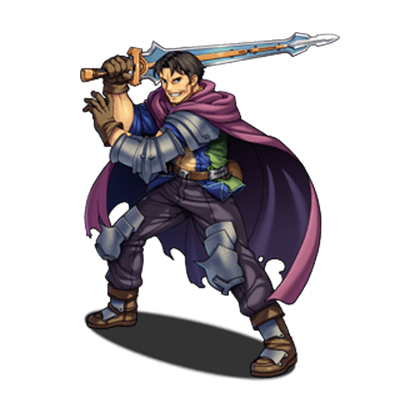

RPG MAKER MZ HELP
Database
How to Set Effects
Settings Overview
The [Effects] parameter defines the effects that you give to the desired character when an actor/enemy uses a skill or item.
The 13 types of effects that can be assigned are detailed below. You can create skills/items which possess a combination of effects by configuring multiple effects.
How to Configure
To set an effect, double-click an empty row in the Effects field. Select the type of effect in the window that appears, then specify such things as the targets which the effect applies to, the strength of the effect, etc.
The effects you've set will be displayed in the [Effects] list. Double-clicking this icon will allow you to re-edit the content you specified. Additionally, by right clicking an item and using the context menu that appears, you can perform actions such as copying and deleting settings.
Contents of Each Effect
Recover Tab
-
Recover HP
Recovers HP (adds to current value). Recovery values are specified as a sum of a percentage of the target character's Max HP (-100% to 100%) and a set value (-999999 to 999999). If you only wish to set one of these values, make sure to set the other value to 0. When setting this effect to an item, the recovery value will change according to the user's [Pharmacology] special trait value.
-
Recover MP
Recovers MP (adds to current value). Recovery values are specified as a sum of a percentage of the target character's Max MP (-100% to 100%) and a set value (-9999 to 9999). If you only wish to set one of these values, make sure to set the other value to 0. When setting this effect to an item, the recovery value will change according to the user's [Pharmacology] special trait value.
-
Gain TP
Increases TP by the specified amount. Specify the increase using a set value (0 to 100).
[State] Tab
-
Add State
Adds a state. Specify the desired state and the rate of success (0 to 1000%). By setting this to a value higher than 100%, this will have a higher chance of success to add the state than its original effectiveness.
-
Remove State
Removes a state. Specify the desired state and the rate of success (0 to 1000%).
[Param] Tab
-
Add Buff
Raises the fluctuation level of the specified trait by one. There is a 25% fluctuation in the original value per level. To have this raise two or more levels at once, add this effect multiple times. Set the target parameter and the number of turns (1 to 1000) this effect will last.
-
Add Debuff
Lowers the fluctuation level of the specified trait by one. There is a 25% fluctuation in the original value per level. To have this decrease two or more levels at once, add this effect multiple times. Set the target parameter and the number of turns (1 to 1000) this effect will last.
-
Remove Buff
Resets a trait to its original value when the fluctuation level of the specified trait is buffed.
-
Remove Debuff
Resets a trait to its original value when the fluctuation level of the specified trait is debuffed.
[Other] Tab
-
Special Effect
Can only be set to [Escape]. The target character will flee from battle. If an actor has received this effect, they will not earn any EXP.
If all party members flee due to a skill with this effect, they will lose the battle.
*This is different than the "Escape" party command. -
Grow
Permanently raise the value of a trait. Specify the target trait and the value (1 to 1000) to be added.
-
Learn Skill
An actor will learn the specified skill. This effect will not be applied to enemies.
-
Common Events
Specify the common event to run. You can configure multiple events to one data.